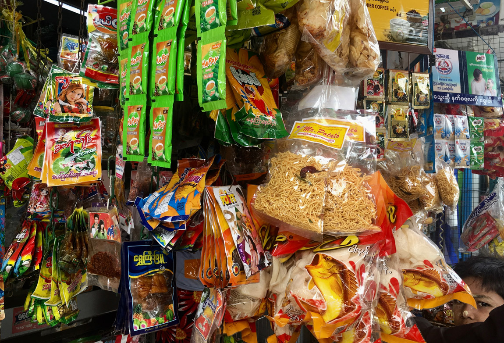

Plastic trails: tracing
recalcitrant matter
“Before the 1980s there was no flood in Yangon… It was after plastic appeared that we started facing this urban flooding”.¹
Plastic trails
Plastic-monsoonal relations are particularly acute in Yangon where plastic waste is overwhelming urban infrastructures. Throughout the city ‘refuse run-off’ and ‘runaway rubbish’ results in floods every monsoon season. Following plastic through the city, reveals multifaceted relations between plastic, people and the monsoon.

Given its ubiquity, the plastic trail has many potential beginnings, routes and endings. Tracing plastics through Yangon focused mainly on singleuse items, plastic bags, water bottles, plastic straws and sachets, and their entanglements within the monsoonal-hydrological cycle. These plastics are utilised, discarded and transported with the rains through urban waterways, into rivers and then oceans via the Bay of Bengal. Through following plastic journeys, monsoon weather becomes a lively and significant agent in the creation, discard, mobilisation and transformation of plastic materials. Weather-plastic relations are a reminder that the story of plastic is not exclusively human.
Plastic histories
“Perhaps nothing sums up the irrationality of capitalism more than this – [plastic] materials that can last practically forever are used to make products designed to be thrown away”.²
The plastic life cycle begins with gas and oil, the basic building blocks of all plastics. Made from hydrocarbons, synthetic plastic polymers can be moulded, extruded or cast into films, filaments and fibres of all shapes and sizes. Designed to replace rare natural materials, plastics were intended to produce luxury long-lasting items. In recent times, however, a growing proportion of cheap plastics are produced, with half of global plastics going into single-use applications. Only nine percent of all plastics ever made are recycled and most is deposited into landfills. Plastic has become an everyday infrastructure, its ubiquity an indicator of how far capitalism has seeped into lives and societies across the globe.
Plastic cultures
“This is a society of street food and when you get street food it’s almost always in a plastic bag. Whether you get something hot or fruit and vegetables, everything is in plastic”.³
The role that plastic plays in Yangon’s street food culture is striking. Plastic forms the stools, tables and table cloths that people rest on, the cutlery, cups and straws that people eat and drink from, and the bags, string and takeaway containers used to transport food. Unlike traditional, biodegradable materials, plastic enables food to be preserved longer in hot, humid conditions, reducing food waste. This is appealing in an environment where spoilage of food is common during monsoon season. Although plastic proofs against the effects of a monsoonal climate, its utilization and discard is influenced by the seasons and shifting consumption patterns. Many festivals in the Burmese calendar occur in cool, dry winter months when monsoon rains have eased; as festivities intensify so does waste production.
Plastic infrastructures
“When the rainfall starts all that plastic goes into the drainage system. At monsoon onset, all of Yangon is flooded because the drainage system is blocked with six months of plastic!”4
Plastic discarded on city streets finds its way into drains and waterways, forming blockages that prevent rainwater from moving through the city. Monsoon waters flood streets and low-lying areas as plastics disrupt hydraulic infrastructures. While a large amount of plastic waste is thrown onto streets, back alleys and waterways, the majority of plastic waste is transported to municipal dumpsites. Vast open mounds of entangled plastic are baked in the sun during the dry season and drenched by monsoon rain during the wet season, gradually disintegrating over time. Because Yangon’s dumpsites are not ‘sanitary’, meaning they are not segregated from their geo-hydrological surroundings via lining materials, plastics leak into soil and water, with flooding, storms and monsoon runoff enabling their transportation.

Plastic mobilities
“From the canals and rivers everything goes out into the ocean”.5
Although plastic accumulates within urban landscapes, it does not remain confined to cities, but travels far beyond urban boundaries, mobilised by the fluxes of the weather-world. With the flushing effect of monsoon rains, plastics makes their way from urban streets, waterways and dumpsites into the surrounding rivers. Plastic transport rates increase with precipitation as accumulated plastics are mobilised and washed downstream. Once entering the ocean, plastics move with ocean currents, waves and wind, accumulating in garbage patches. Although the Indian Ocean receives the largest input of plastics globally, rather than forming patches, the ocean’s unique monsoonal rhythms, currents and atmospheric circulations disperse plastics through vast oceanic pathways. While oceans may appear to be the final sink for plastics, they do not remain confined here either, they return via beached pollutants, plastic rain and contaminants in the food chain.
Above: Major sources of riverine input of plastic into the Indian Ocean. Credit: The Ocean Cleanup (CC BY-NCND).
More-than-human plastic
entanglements
“If we follow the life-cycle of plastic, it leads not to an ephemeral non-ontological force, but to an all too material and materialised set of implications for multiple beings, humans and nonhumans alike, in the world”.6
Although plastic may be designed and utilised to maintain separations and barriers between bodies, things and the environment, it persistently breaks these divisions through fragmentation, accumulation and dispersal. As plastics infiltrate earth systems through the hydrological, geological and meteorological cycles, they gradually become entangled within ecological webs. Far from being benign and inactive, plastics actively transform and are transformed by these intra-actions, producing novel ecologies and mutant geologies that will be part of earth systems for millennia to come. With this understanding, we must relinquish the idea that plastic is separate from the more-than-human world in which it is produced. Whether we like it or not, plastics are inextricably bound up in our present and future becomings.
1 Yangon Meteorologist, interviewed by Beth Cullen and
Christina Geros, 2018.
2 A. Leather, ‘Why Capitalism Loves Plastic’, Socialist Review, October 2018, Issue 439, no page <https://socialistreview.org.
uk/439/why-capitalism-loves-plastic-0>
3 Yangon resident, interviewed by Beth Cullen, 2019.
4 Yangon Meteorologist, interviewed by Beth Cullen and
Christina Geros, 2018.
5 Yangon resident, interviewed by Beth Cullen, 2019.
6 H. Davis, ‘Plastic: Accumulation without metabolism’,
Placing the Golden Spike: Landscapes of the Anthropocene,
Milwaukee, INOVA, 2015, p. 71.
Text by Beth Cullen.
Design by Jonathan Cane.
Plastic trails: Tracing recalcitrant matter
Video by Beth Cullen.
Plastic trails
Photographs and video by Beth Cullen.
Plastic histories
Photographs by Lindsay Bremner.
Video by Beth Cullen.
Plastic cultures
Photographs and video by Beth Cullen.
Plastic infrastructures
Photographs and video by Beth Cullen.
Plastic mobilities
Photographs by Beth Cullen (river plastics), Anthony Powis
(ocean plastics) and Lindsay Bremner (beach plastics).
More-than-human plastic entanglements
Photographs by Beth Cullen.